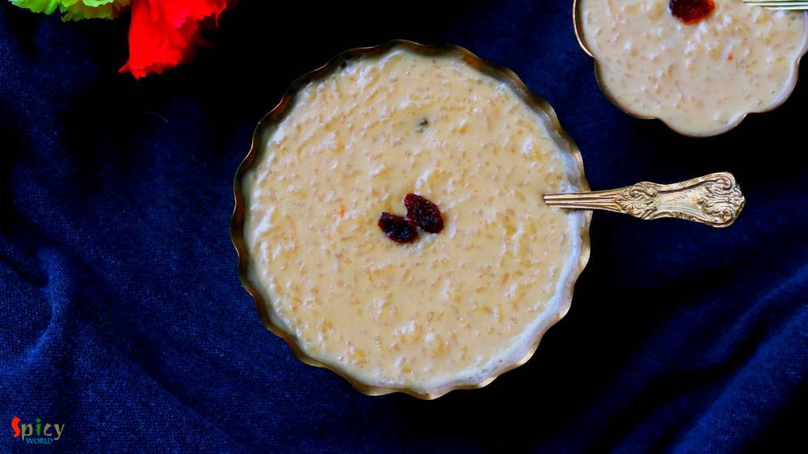

Simple and Easy Recipes

Nonveg Recipe
Nov 29, 2018
Tandoori Prawn Pulao is a delicious, spicy seafood rice pilaf dish in which Prawns will be marinated with yogurt, tandoori spices and other ingredients then will be tossed with long grain Basmati rice ... so so good! You can have this Prawn Pulao as it is or any kind of gravy on the side will work just fine. The recipe is simple and take very less time to cook. Try this in your kitchen and let me ...


Veg Recipe
Nov 26, 2018
'Payesh' / Rice pudding is a very common dessert in Bengal. Having payesh on any occasion is considered as a good sign. Nolen gur means Date Palm Jaggery which we get during winter season. The aroma and color of Nolen Gur is phenomenal. Sweet shops sell so many variety of sweets with date palm jaggery like - Gurer Rosogolla, Gurer Sondesh, Gurer Patisapta and what not! Payesh needs babysitting, as ...

Nonveg Recipe
Nov 22, 2018
Hariyali Chicken Kabab is a very delicious variety of kabab in which boneless chicken will be marinated in yogurt, ginger, garlic, mint-coriander paste and lot of fresh spices along with few other ingredients. You can definitely use chicken legs instead of boneless. I will recommend you to use chicken thighs instead of breast pieces, as thighs will come out much more juicy. Hariyali means green co ...

Veg Recipe
Nov 19, 2018
Aloor Dom is a very good old Bengali recipe which can never go wrong with anything. You can serve this Bengali style dry Potato curry with Luchi / Porota / Kochuri / Pulao / Fried rice and what not. It tastes heavenly. I made Lachha Parathas to go with it. The recipe of Aloor dom is very easy in which potatoes will be cooked in onion tomato based gravy along with a special ground masala and yes, t ...

Nonveg Recipe
Nov 13, 2018
In India many dhabas and restaurants sell Keema Masala which is minced mutton curry. Keema means mince. This is a delicious non veg gravy which goes best with plain chapati or naan. In Keema Masala, minced mutton will be cooked in a onion tomato based sauce along with some flavorful spices and lots of fresh green chilies and coriander leaves. Try this recipe in your kitchen and enjoy a wonderful d ...

Veg Recipe
Nov 12, 2018
Doi Fuchka or Dahi Puri Chaat is one delicious and popular variety from Chaat Gharana. You can get several types of chaat in India from street vendors. They all are very very tasty. In Kolkata, one of the famous chaat is 'doi fuchka'. The hollow chips are filled with spicy potato filling, thick sweet and sour yogurt mixture, sweet tamarind chutney along with lots of fresh coriander leaves and few ...

Nonveg Recipe
Nov 7, 2018
One of my favorite indo-chinese dish is 'Chili Fish' - which is very similar to Chili Chicken. In this recipe, deep fried fish nuggets will be cooked in a hot and spicy sauce with onions and peppers... so, so delicious ! You can get them in many Chinese restaurants in Kolkata. It tastes heavenly with fried rice or noodles and it is very easy to make. Try this recipe in your kitchen and enjoy with ...

Veg Recipe
Nov 4, 2018
Paneer Pakoras are delicious crispy vegetarian appetizer which can be served with mint or tamarind chutney and a cup of strong tea. I cut the paneer cubes from the center and filled it with green chutney as paneer has a bland taste. The recipe is very simple and easy. Your kids will love these Paneer Pakoras. Enjoy the recipe with detailed video.

Nonveg Recipe
Oct 31, 2018
Egg Malai Curry is a Bengali delicacy, in which hard boiled eggs are cooked in a creamy milk based sauce. Dimer Malaikari is a very rich and mild curry which goes best with plain steamed rice or ruti. This is a kid friendly recipe, adjust the heat level according to their taste. They will enjoy this preparation to the core, I can vouch for that. If your family love egg, then you have to give this ...

Nonveg Recipe
Oct 29, 2018
Pudina Chicken has a delicious yogurt and mint based gravy which goes best with plain roti or Indian flatbread. Mint leaves / Pudina patta has it's very own unique taste and flavor, which is why you can only use them in those dishes where it fits properly. Not every chicken curry tastes good with mint but this one is my family favorite. Pudina Chicken is very simple recipe with loads of fresh flav ...